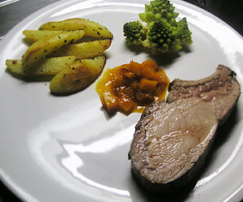

Ormalinger Schweinscaree von der Farnsburg
6 von 6das schweinscareé am stück (pro person ein Knochen) von allen seiten gut anbraten und bei 80 grad im ofen ca. 2 stunden niedergaren. Kotelette schneiden mit salz und pfeffer abschmecken und sofort servieren.
